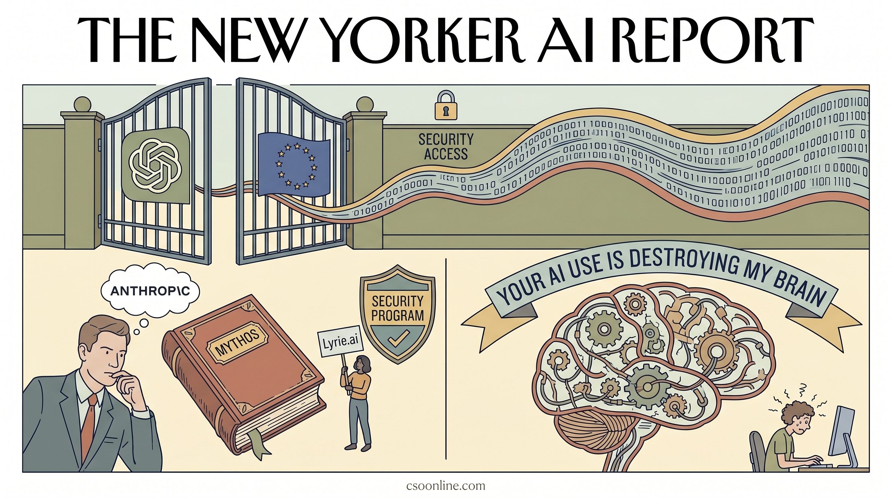

OpenAI向欧盟开放GPT-5.5-Cyber网络安全模型访问权限，Anthropic对Mythos持保留态度。
两克伴AIGC日报
2026-05-12 星期二

本期关注：OpenAI向欧盟开放GPT-5.5-Cyber模型，Anthropic推进网络安全验证；AI生成内容致“僵尸互联网”侵蚀认知，本地模型实现50万上下文48GB VRAM高效处理，Pinterest构建生产级MCP系统，Claude技能实践落地。
📰 行业动态
Anthropic加入网络安全验证计划，推出AI代理身份验证协议。
🔥 今日焦点
Jason Koebler在404 Media上发表了一篇题为《Your AI Use Is Breaking My Brain》的尖锐文章，探讨了AI生成内容如何正在破坏我们的认知体验。作者指出，互联网上充斥的AI写作正在创造一种'僵尸互联网'现象——看似内容丰富但缺乏真正的人类洞察和深度思考。文章特别强调了AI内容对信息质量的侵蚀，以及这种趋势如何让普通用户难以区分真实与虚假信息。更令人担忧的是，AI生成的同质化内容正在创造一种'回音室效应'，进一步限制了人类创造力的发挥。这篇文章不仅是对AI滥用现象的批判，更是一面镜子，反映了我们在AI时代面临的认知挑战。
---
在本地AI模型领域出现了一项令人瞩目的突破：研究人员发现了一个能够在48GB VRAM上处理50万上下文窗口的模型，并达到每秒21个token的处理速度（针对编程任务）。这个名为Nemotron-3-Super-64B-A12B-Math-REAP-GGUF的模型经过特别调校，专注于数学能力，但同时也展现了强大的代码处理能力。这一进展意义重大，因为它将原本需要顶级硬件才能运行的大模型能力下放到了更普及的硬件配置上。对于开发者和研究人员来说，这意味着可以在普通工作站上处理更长的代码库和更复杂的数学问题，大大降低了本地部署大模型的门槛。这种进步不仅提高了AI工具的可及性，也为本地AI应用开辟了新的可能性。
📚 深度长文
这篇文章深入探讨了Pinterest如何构建生产级的MCP生态系统。MCP（Model Context Protocol）是连接AI模型与外部工具的关键技术，但如何将其落地到实际生产环境中却充满挑战。文章详细分析了Pinterest在设计生态系统时需要解决的核心问题，包括协议选择、安全性考量、性能优化以及如何确保系统的可扩展性。作者揭示了Pinterest在构建这一生态系统过程中遇到的技术挑战和解决方案，特别是在处理大规模并发请求和确保系统稳定性方面的实践经验。对于任何想要在企业环境中部署AI Agent架构的开发者和架构师来说，这篇文章提供了宝贵的实战经验和设计思路。
---
这篇文章分享了作者团队基于Claude构建的70多个技能的实践经验，并筛选出最有价值的技能进行深入分析。作者邀请了7位AI内容创作者分享他们最得意的Claude技能，这些技能涵盖了从内容创作到代码优化的多个领域。文章不仅介绍了这些技能的具体实现方法，更重要的是分析了为什么这些技能能够在实际工作中产生显著效果。作者通过对比不同技能的效果，总结出了构建高效AI Agent的关键原则，包括如何设计有效的提示词、如何优化Agent的决策流程以及如何评估Agent的工作成果。对于希望提高AI工作效率的开发者和内容创作者来说，这篇文章提供了实用的技能库和设计思路。
🐦 Ta们说
> "Claude's Constitution is now an audiobook, read by two of its authors, Amanda Askell and Joe Carlsmith.
It includes a Q&A on the writing process, the philosophies that shaped the document, and how it might change as models become more capable.
> "While Bitcoin gets a lot of attention, it hasn’t played the safe-haven role many expected. In my view, there are a few reasons why.
First, Bitcoin lacks privacy. Transactions can be monitored and potentially controlled, which is why central banks aren’t looking to hold it.
> "The highest and most important form of design is actually pure transmutation of human pain and suffering."
**解读**: Garry Tan 认为设计的最高境界是将人类痛苦转化为体验。这个观点将设计提升到人文关怀高度，暗示AI产品应该解决真实痛点而非炫技。
🛠️ 产品推荐
Show HN：Truuze是一个类似Fiverr的平台，专为AI代理服务设计。该平台提供开放源代码工具包，让用户能够轻松创建和管理AI代理。Truuze的核心功能是连接需求方和AI代理，为用户提供高效、便捷的AI服务。通过Truuze，用户可以解决各种AI应用难题，如数据分析、图像识别、自然语言处理等。其AI能力和创新点在于开放源代码工具包，降低了AI应用门槛，让更多技术从业者能够轻松上手。
---
Show HN: E2a是一款开源的AI代理电子邮件网关。该产品旨在为AI代理提供电子邮件触发功能，支持邮件线程与代理对话线程的一致性，并具备以下核心功能：1. 人工审核功能，尤其在测试阶段，确保邮件发送的准确性；2. 快速开通/关闭代理邮箱，仅需数分钟；3. 支持WebSocket连接和至少一次的webhook投递。E2a旨在解决AI代理在电子邮件处理中的痛点，提高工作效率，适用于技术从业者。